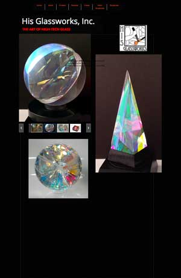
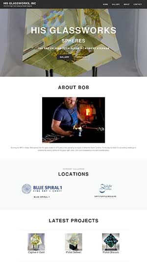
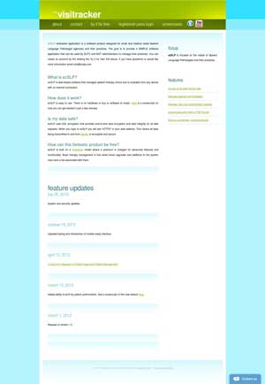
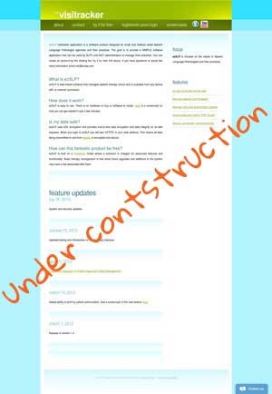
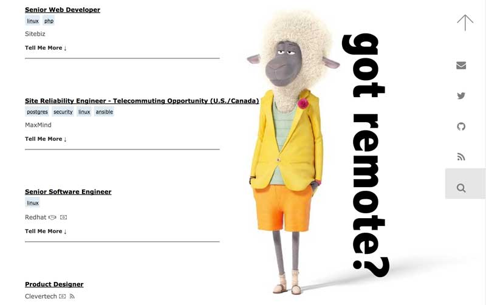

his.glass
I met Bob on NextDoor. After getting to know him, I discovered he's a super talented, local glass artist. I offered to redesign his website using WordPress.
ezslp.com
I met Mark, an adjunct professor, in my WEB182 class at AB Tech. On a break between classes he started teaching me Rails. Mark gave me the project of redesging the front-end of EZSLP.com.
 remotegig.io
I also updated the UI for Mark's Remote Gig website. I updated the menu to use a JavaScript hamburger menu Mark found on CodePen.
